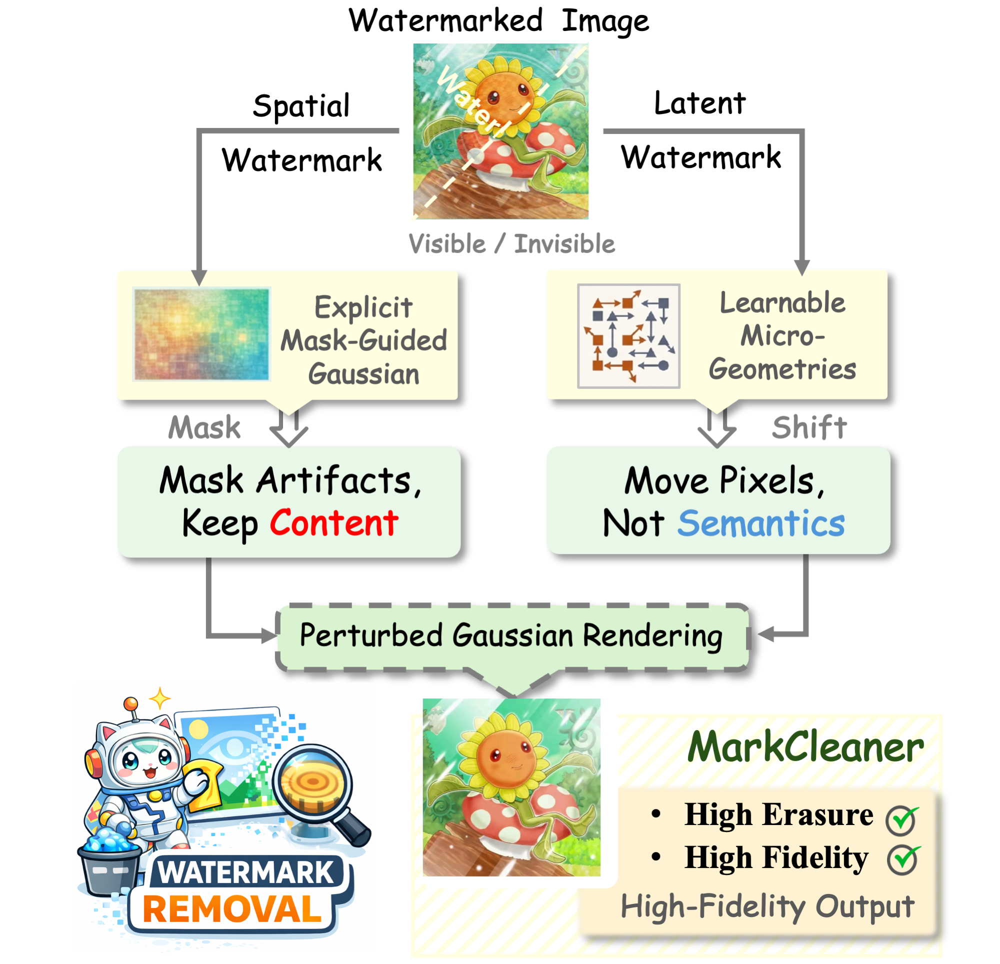
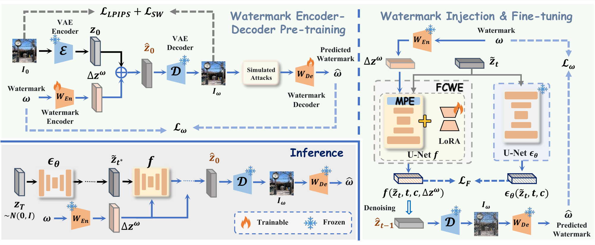

MarkCleaner
High-fidelity watermark removal through imperceptible micro-geometric perturbations, designed to preserve the visual identity of the underlying image.

孔小茜
I am Xiaoxi Kong (孔小茜), a Postdoctoral Researcher at the College of Electronics and Information Engineering, Shenzhen University, working with Prof. Bin Li. My research focuses on AIGC watermarking, multimedia content security, and trustworthy provenance for AI-generated media.
I received my Ph.D. and M.Sc. degrees from the Faculty of Innovation Engineering, Macau University of Science and Technology, advised by Prof. Zhanchuan Cai. My earlier research centered on high-fidelity reversible data hiding.

High-fidelity watermark removal through imperceptible micro-geometric perturbations, designed to preserve the visual identity of the underlying image.

Stable Latent Integration for robust watermarking in diffusion models, balancing watermark resilience with generated-image quality.
Shenzhen University
Postdoctoral Researcher, College of Electronics and Information Engineering
Advisor: Prof. Bin Li
2023.10 - 2026.09
Macau University of Science and Technology
Ph.D. in Computer Technology and Applications, Faculty of Innovation Engineering
Advisor: Prof. Zhanchuan Cai
2020.09 - 2023.10
Macau University of Science and Technology
M.Sc. in Information Technology, Faculty of Innovation Engineering
Advisor: Prof. Zhanchuan Cai
2018.09 - 2020.07
Yangtze University
B.Eng. in Automation, School of Electronics and Information
Advisor: Xianfang Ye
2014.09 - 2018.07